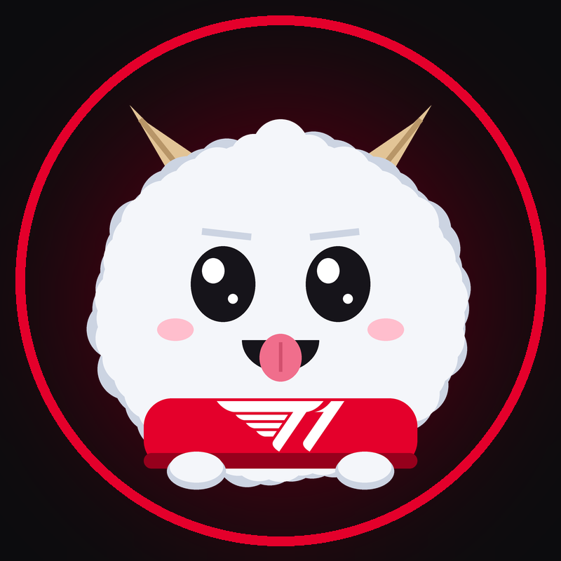

T1 SoloQ Live
An automated, unofficial fan-made Twitch channel that streams the live ranked solo queue games of T1 players, and of T1 Esports Academy when no T1 player is in game.
Channel: twitch.tv/t1soloq (opening soon)
T1 SoloQ Live is not affiliated with, endorsed by or approved by Riot Games or T1. It uses the Riot Games API (Account-V1, Spectator-V5, League-V4, Match-V5).